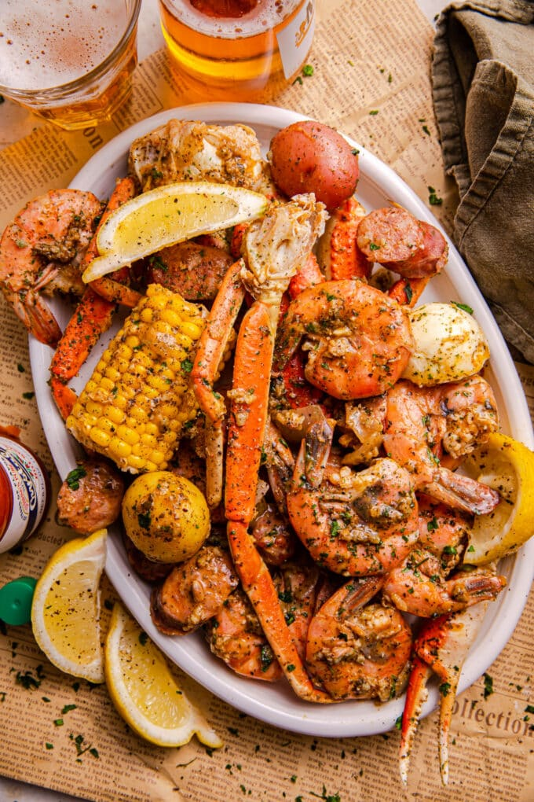

Old Bay Seafood Boil

This seafood boil recipe with Old Bay is the absolute best way to enjoy seafood. The lemon, thyme, and seasoning
really make the boil. The potatoes, corn, and sausage are mouthwatering for anyone who is not a big seafood
lover. Enjoy in the summertime or pull this recipe out on Christmas and take time to relax with the family.
Serve with fresh lemons, Bloody Marys, cold beer, crusty bread, and plenty of napkins.
Ingredients
- 4 lemons, halved
- 2 medium sweet onions (such as Vidalia®), quartered
- 4 serrano chiles, split in 1/2 lengthwise and seeds and membranes removed
- 2 heads garlic, peeled and halved
- 2 bunches fresh thyme, tied with string
- 1 ⅔ cups seafood seasoning (such as Old Bay®), or more to taste
- 6 teaspoons kosher salt, or more to taste
- 6 bay leaves
- 3 pounds medium red potatoes, cut in 1/2
- 5 (13 ounce) packages smoked kielbasa sausage, cut into 2-inch pieces
- 6 ears sweet corn, halved
- 30 littleneck clams, scrubbed
- 4 pounds jumbo shrimp, deveined, tail on
- 2 ½ pounds Alaskan king crab legs
Steps
- Fill a very large stockpot fitted with a basket insert with about 8 quarts of water, or about halfway full. Squeeze lemons into the water, tossing the halves in too. Add onions, chiles, garlic, thyme, seafood seasoning, kosher salt, and bay leaves; bring to a boil over medium-high heat. Reduce heat and simmer for 10 minutes.
- Stir potatoes into the pot and simmer for 15 to 20 minutes.
- Next, add sausage and corn; cook another 5 minutes, making sure everything stays covered with the liquid.
- Add clams and boil until they open, about 8 minutes. Toss in shrimp and shut off the heat. Cover the pot and let shrimp steep in the flavor for 10 minutes, adding crab in the last 5 minutes (press them into the liquid).
- Drain and spread crab, shrimp, sausage, clams, corn, potatoes, and onions out on a newspaper-covered table or on three large serving trays. Sprinkle with a dusting of Old Bay or provide for individual use.